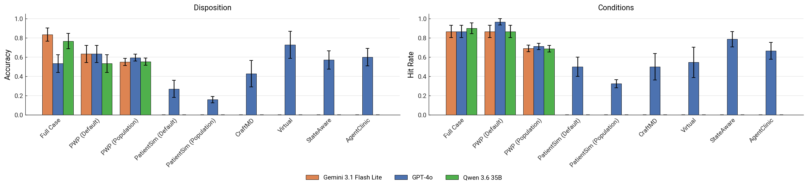

Realistic Patient Simulation through Controlled Diversity and Selective Disclosure
arXiv preprint, 2026
Simulating realistic patient interactions is a key requirement to testing clinical applications of LLMs at scale without time-consuming and expensive user studies. However, existing approaches often lack realism and controllability, often oversharing information unprompted, and failing to capture the wide variability of patient behavior. Here, we introduce PatientsWithPersonality (PWP), a patient simulation framework that generates realistic yet diverse virtual patient responses through explicit personality parametrization over a latent patient state. Grounded in HEXACO, a six-dimensional personality space used to quantify and parameterize human behavioral traits, our approach enables fine-grained control over conversational style, cooperativeness, and information disclosure within a unified framework. In a clinician evaluation, PWP is judged nearly as realistic as recorded human actors and clearly ahead of prior simulators, while being flagged as “too informative” far less often. Conditioning on HEXACO axes yields personas whose configured traits are recoverable by both clinicians and an autorater, span a substantially wider behavioral footprint than the closest baseline, and prevent oversharing. Altogether, our framework paves the way for more accurate and informative LLM benchmarking through our realistic and steerable patient simulator.
Six personality axes give fine-grained, recoverable control over how a patient behaves.
Patients reveal information only when prompted, preventing the unprompted oversharing of prior simulators.
Configured traits span a substantially wider behavioral footprint than the closest baseline.
Judged nearly as realistic as recorded human actors in a blinded clinician study.



@article{schlager2026patients,
title = {Patients With Personality: Realistic Patient Simulation
through Controlled Diversity and Selective Disclosure},
author = {Schlager, Moritz and Jungmann, Friederike and Schmidgall, Samuel
and Raffler, Philipp and Hartl, Franziska and Wende, Eva
and Ro{\ss}m{\"u}ller, Paula and Ketzer, Conrad and Hassidim, Avinatan
and Webster, Dale R. and Matias, Yossi and Liu, Yun
and Rueckert, Daniel and Schaekermann, Mike and Hager, Paul},
journal = {arXiv preprint arXiv:2606.17441},
year = {2026}
}